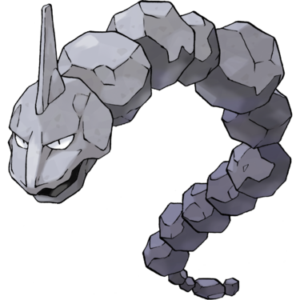
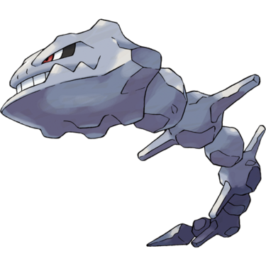
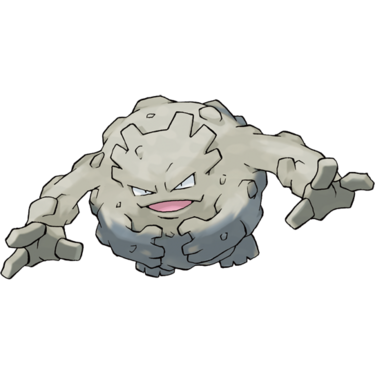
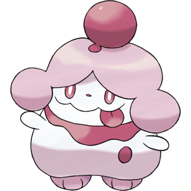
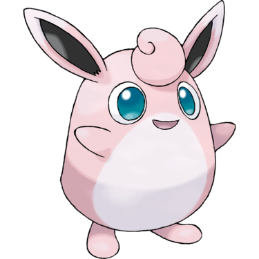
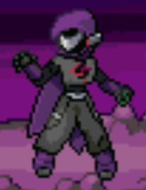
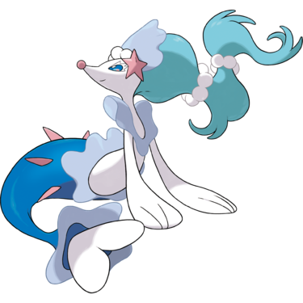

- Getting to Crystal Peak
- Rival Battle
- Crystal Peak – Lower Floors
- Crystal Peak – 1F Entry Chamber
- Crystal Peak – B1F Rune Chamber
- Crystal Peak – 1F Main Chamber
- Crystal Peak – Exterior
- Crystal Peak – Middle Floors
- Crystal Peak – 2F Middle Chamber
- Crystal Peak – 3F Dragon Chamber
- Dragon Showdown
- Crystal Peak – Upper Floors
- Crystal Peak – 4F Jail Chamber
- Crystal Peak – 5F Antechamber
- Crystal Peak – Exterior Summit
- Obtaining the Master Ball
Quick Guide:
- Defeat your Rival
- Enter Crystal Peak
- Survive the Dragon Showdown
- Free Marlon and Melony
- Defeat Hoopa and Rayquaza
- Vanquish Aklove and Stop the Light of Ruin
- Fight Alongside your Rival
- Obtain the Master Ball
Getting to Crystal Peak

Now that you have explored Cootes Bog and Magnolia Town, it’s time to finally go to Crystal Peak and stop the Light of Ruin.
To get there, leave Polder Town by the north exit and take the left path at the fork.
When you get to the next fork, go through the long grass path under the bridge, passing Pokémon Ranger Betty.
The long grass path will curve around to the right – follow it and you’ll end up at the hook-shaped pond.
Surf across the pond to the eastern bank, and you’ll see a clean water source to your northeast. That’s your ultimate destination – but head south for now.
With the clean water on your right-hand side, head south until you reach a fork, then go southeast.
Camper Bradley is itching for a fight if you haven’t taken care of him already.
Once he’s defeated, it’s just a matter of walking east until you reach the water.
Hop on your Surfing Pokémon and head up the water source as it winds through the trees to its origin point – a waterfall.
You’ve got the badge and HM Waterfall from Polder Gym, so it’s time to use them.
Climb up the waterfall, and you’ll find yourself at the entrance to Crystal Peak.
Rival Battle
However, your Rival is waiting for you.
You’ll be taking on Crystal Peak together, but he wants to see if you’re ready first.
| Rival Battle (Final Round) | |
|---|---|
|
Toucannon Normal/Flying (Lv.54) |
 |
|
Vaporeon Water (Lv.55) |
 |
|
Mamoswine Ice/Ground (Lv.56) |
|
|
Aggron Ice/Ground (Lv.56) |
 |
|
Metagross (Mega) Steel/Psychic or Garchomp (Mega) Ground/Dragon or Tyranitar (Mega) Rock/Dark (Lv.58) |
|
You’ll need to pick three Pokémon that will be used alongside your Rival’s Toucannon, Mamoswine and Vaporeon in the Double Battles ahead.
Once you’re all set, the only thing to do is to head inside and face your destiny.
Crystal Peak – Lower Floors
{kind=link}
| Points of Interest | |
|---|---|
 |
Healing Chansey |
 |
Medium Laurel |
 |
Scientist Rosalind |
 |
Cyclist Lucina |
 |
Light of Ruin Grunt Pair A |
| Exits and Passages | |
|---|---|
 |
Cootes Bog |
 |
1F Entry Chamber to B1F Rune Chamber |
 |
B1F Rune Chamber to 1F Main Chamber |
 |
1F Main Chamber to B1F Solitary Chamber |
 |
1F Main Chamber to Crystal Peak Exterior Slopes |
Items
| Items | |
|---|---|
| TM05 Roar | |
| Max Potion | |
|
Coba Berry (hidden) |
 |
Wild Pokémon (Interior Floors)
|
Wild Pokémon (All Interior Floors) |
|
|---|---|
| Cave | |
|
Loudred Normal |
|
|
Woobat Psychic/Flying |
|
|
Onix Rock/Ground |
 |
|
Noibat Flying/Dragon |
 |
|
Noivern Flying/Dragon |
|
|
Zweilous Dark/Dragon |
 |
|
Steelix Steel/Ground |
 |
|
Skarmory Steel/Flying |
|
| Surfing | |
|
Gastrodon Water/Ground |
 |
|
Golduck Water |
 |
|
Dragonair Dragon |
|
| Fishing | |
|
Magikarp Water (Old Rod) |
 |
|
Psyduck Water (Good Rod) |
 |
|
Finneon Water (Good Rod) |
 |
|
Golduck Water (Super Rod) |
|
|
Lumineon Water (Super Rod) |
 |
|
Qwilfish Water (Super Rod) |
|
| Rock Smash | |
|
Graveler Rock/Ground |
 |
|
Onix Rock/Ground |
|
Trainers
| Trainers | |
|---|---|
| Medium Laurel | |
|
Drifblim Ghost/Flying (Lv.54) |
|
|
Drifblim Ghost/Flying (Lv.55) |
|
| Scientist Rosalind | |
|
Luxray Electric (Lv.55) |
 |
|
Porygon2 Normal (Lv.54) |
|
| Cyclist Lucina | |
|
Noibat Flying/Dragon (Lv.53) |
|
|
Whirlipede Bug/Poison (Lv.55) |
 |
| Light of Ruin Grunt Pair A | |
|
Slurpuff Fairy (Lv.53) |
 |
|
Wigglytuff Normal/Fairy (Lv.53) |
 |
|
Gardevoir Psychic/Fairy (Lv.54) |
|
Crystal Peak – 1F Entry Chamber
The first chamber you enter is a small one – walk north and you’ll see a Healing Chansey.
Walk east from there and you’ll see some rocks to be smashed and boulders to be pushed.
It’s not a puzzle really, just make sure the way through is unblocked.
Once you force your way past that obstacle, you’ll see a ladder down to a lower floor.
Crystal Peak – B1F Rune Chamber
When you arrive, you’ll see a pond to the east along a passageway. Surf across it until you see dry land.
The north way leads to a room with a Hiker and three strange tablets – you’ll need to ignore them for now, since they can only be interacted with in the post-game.
Take the east way instead.
You’ll see a ladder leading up to a different chamber on 1F.
Crystal Peak – 1F Main Chamber

This is a fairly large chamber, though a lot of it is blocked off.
Climb down the blue crystals on the wall to get to the cavern floor.
Go west here, passing by Medium Laurel, until you see a sloping ledge to the west.
Climb up the yellow crystals and you’ll be on an upper ledge. Follow the ledge south.
You may encounter Cyclist Lucina on the way. Keep going until you reach a junction as seen below.
The path to the left leads to a tunnel entrance that is a dead end right now, so the only path forward is to climb down the yellow crystals.
Squeeze your way through the crystals on the path ahead and you’ll run right into the first Light of Ruin Grunts in the cave.
After you and your Rival beat them, you’ll see a tunnel in the wall that leads to Crystal Peak’s exterior.
Crystal Peak – Exterior
{kind=link}
| Points of Interest | |
|---|---|
 |
Final Confrontation |
| Exits and Passages | |
|---|---|
|
Crystal Peak Exterior Slopes to 1F Main Chamber |
 |
Crystal Peak Exterior Summit to 5F Antechamber |
Items
| Items | |
|---|---|
| Slopes | |
| Nugget | |
| X Defense | |
|
Full Restore (hidden) |
|
| Zygarde Cell | |
|
Escape Rope (hidden) |
|
| Summit | |
|
Green Shard (hidden) |
|
| Zygarde Cell | |
Wild Pokémon (Exterior)
|
Wild Pokémon (Exterior) |
|
|---|---|
|
Drifblim Ghost/Flying |
|
|
Rufflet Normal/Flying |
 |
|
Vullaby Dark/Flying |
 |
|
Absol Dark/Flying |
 |
Exterior Slopes
There aren’t any trainers out here, but there are a few wild Pokémon that can still reach you, so head west up the blue crystals to try and find another way inside the mountain.
Once you’ve climbed them, there’s a longer set of orange crystals you’ll need to make your way up.
Once you arrive on a ledge, take the yellow crystals north.

Then climb up the blue crystals on the right side.
Keep going until you have to climb a yellow set of crystals, and then an orange set.
You’ll see the entrance into upper Crystal Peak from there.
Head inside the cave and you’ll find yourself on 2F.
Crystal Peak – Middle Floors
{kind=link}
| Points of Interest | |
|---|---|
 |
Light of Ruin Grunt Pair B |
 |
Light of Ruin Grunt Pair C |
 |
Pokémon Storage Porygon |
| Tao Dragon Double Battle | |
| Exits and Passages | |
|---|---|
 |
2F Middle Chamber to Crystal Peak Exterior Slopes |
| 2F Middle Chamber to 3F Dragon Chamber | |
 |
3F Dragon Chamber to 4F Jail Chamber |
Trainers
| Trainers | |
|---|---|
| Light of Ruin Grunt Pair B | |
|
Carbink Rock/Fairy (Lv.53) |
|
|
Clefable Ghost/Flying (Lv.54) |
|
|
Sylveon Fairy (Lv.54) |
|
|
Shiinotic Grass/Fairy (Lv.54) |
 |
| Light of Ruin Grunt Pair C | |
|
Aromatisse Fairy (Lv.54) |
|
|
Slurpuff Fairy (Lv.54) |
|
|
Alolan Ninetales Ice/Fairy (Lv.55) |
 |
|
Ribombee Bug/Fairy (Lv.54) |
 |
Crystal Peak – 2F Middle Chamber
A lot of this floor is currently inaccessible, so the way through is fairly simple to navigate.
You’ll see two Light of Ruin grunts guarding a passage west – take them on and head through it when you’re done.
Follow the passage along, up a couple of crystal rock climb walls, until you see the ladder for the next floor.
Crystal Peak – 3F Dragon Chamber
This floor is another linear one, with an optional path that you’ll need to ignore.
Surf across the pond to the north and follow the winding passage until you see more Grunts.
Apparently Jax has been through here and already beaten them – but they’re still up to be defeated by you.
At the very end of the winding passage you’ll see a Porygon to switch out your Pokémon with, and the unmistakable signs of an upcoming boss room.
Dragon Showdown
The Light of Ruin want to delay you as long as possible, so Hoopa has summoned the Legendary Pokémon Zekrom and Reshiram to face you in a Double Battle with your Rival!
The Dragons scale to your level, so it can be an extremely tough fight.
If you’ve got that Alolan Ninetales with the Icium-Z, it can be used to take out Zekrom immediately to even things up.
| Tao Dragons Double Battle | |
|---|---|
|
Reshiram Dragon/Fire (level scaled) |
|
|
Zekrom Dragon/Electric (level scaled) |
|
After you defeat the dragons, it’s not over.
Ivory comes down to battle you herself, though not before having to knock out her own son.
| Light of Ruin Admin Ivory | |
|---|---|
|  | |
|
Mismagius Ghost (Lv.57) |
 |
|
Incineroar Fire/Dark (Lv.58) |
|
|
Mandibuzz Dark/Flying (Lv.57) |
|
|
Alakazam (Mega) Psychic (Lv.58) |
|
After beating her, Ivory retreats and your Rival recovers, ready to press on to the top of the mountain.
When the cutscene is over, take the ladder to 4F.
Crystal Peak – Upper Floors
{kind=link}
| Points of Interest | |
|---|---|
 |
Light of Ruin Grunt Pair D |
 |
Marlon and Melony |
 |
Light of Grunt Line of Sight Puzzle |
|
Healing Chansey and Pokémon Storage Porygon |
| Exits and Passages | |
|---|---|
|
4F Jail Chamber to 3F Dragon Chamber |
| 4F Jail Chamber to 5F Antechamber | |
|
5F Antechamber to Crystal Peak Exterior Summit |
Items
| Items | |
|---|---|
| PP Up | |
Trainers
| Trainers | |
|---|---|
| Light of Ruin Grunt Pair D | |
|
Mimikyu Ghost/Fairy (Lv.55) |
 |
|
Togekiss Fairy/Flying (Lv.55) |
 |
|
Gardevoir Psychic/Fairy (Lv.56) |
|
Crystal Peak – 4F Jail Chamber
There is a constant sandstorm raging here that will damage any battling Pokémon that isn’t Rock-, Steel-, or Ground-type.
Cross the pond east and you’ll run into a final pair of Grunts. They’re guarding some familiar prisoners.
But there’s a small boulder puzzle blocking your way forward:
Step 1: Push the middle boulder north once.
Step 2: Use Rock Smash on the east rock.
Step 3: Push the right boulder east to the wall.
Step 4: Push the upper boulder west to the wall.

Then once that’s done, the path will be clear.
Marlon and Melony are trapped behind another boulder, but Marlon’s Krookodile can’t push it from that side. Your Rival helps them out.
You’ll get the Prison Bottle to hopefully use on Hoopa if given the opportunity.
Marlon warns you that the guard ahead has some sort of hypnotizing power, so you’ll need to find some way past him without being seen.
Walk east and you’ll see a pond to surf across.
Once you’re on the other side, smash all of the rocks – making sure not to step into the Grunt’s line of sight – and then push the boulder east so it’s just southwest of him (see the screenshot below).
Then push the boulder north and that will block you from view.
Climb up the ladder and you’ll be on the top floor.
Crystal Peak – 5F Antechamber
A Healing Chansey and Pokémon Storage Porygon confirm that this is the beginning of the end, so heal and swap out Pokémon as necessary.
When you’re ready, take the opening outside to the summit of Crystal Peak.
Crystal Peak – Exterior Summit
When you’re outside, head up the first set of stairs. You’ll be stopped by Jax and Arthur, who are hiding and want to use a bit of stealth.
You’ll get told to wait until Aklove makes an appearance, and then a move can be made.
The Ultimate Weapon is here, a massive crystal structure that used to be in Kalos.
Before Aklove can fire it however, Jax makes his move and everyone rushes in to do battle.
Aklove sends Hoopa to deal with you, and Hoopa brings along Mega Rayquaza to make things a little difficult.
Not to worry though – that Icium-Z trick works as well on Rayquaza as it did on Zekrom.
| Hoopa and Rayquaza Double Battle | |
|---|---|
|
Hoopa Unbound Psychic/Dark (level scaled) |
 |
|
Rayquaza (Mega) Dragon/Flying (level scaled) |
|
Hoopa freaks out at being defeated and starts releasing portals left and right – these may cause a bit of an issue later!
However, you reach for the Prison Bottle just in time and manage to seal it back to its Confined Forme.
Getting Hoopa
Since you’re Aros’ child, the Hoopa is yours by rights apparently, and it joins your team or gets sent to a Box if it’s full.
You can use the Prison Bottle on it to switch between Confined and Unbound Formes.
| Reward Pokémon | |
|---|---|
|
Hoopa Confined Psychic/Ghost (Lv.60) |
|

With no time to spare, you’ll need to shut down the Ultimate Weapon for good.
Facing Aklove
Try and make for the Ultimate Weapon’s controls, and Aklove will stop you. It’s time to take him down.
| Light of Ruin Leader Double Battle | |
|---|---|
| Aklove | |
|
Klefki Steel/Fairy (Lv.56) |
 |
|
Primarina Water/Fairy (Lv.57) |
 |
|
Raichu Electric (Lv.57) |
 |
|
Gardevoir Psychic/Fairy (Lv.58) |
|
|
Roserade Grass/Poison (Lv.57) |
 |

Aklove takes his loss just as well as Hoopa did, and starts freaking out. He pushes past you to activate the Ultimate Weapon anyway, and it hits Dresco Town!
However, before anyone can react, someone unexpected arrives.
Unbeknownst to Aklove, Zeph snuck in to change the Ultimate Weapon’s controls while he wasn’t looking, and set the machine to ‘create’ instead of ‘destroy’.
The beam was harmless to Dresco Town, and there’s no more Shadow Warriors so the weapon has no more energy.
The Light of Ruin are no more.
Aklove is handed in to Arthur and the Pokémon Rangers, and so is Zeph – but Marlon is left alone.
You might think it’s over, but it isn’t – there’s one last battle to fight, and it’s a Double Battle.
Marlon is your final opponent on Crystal Peak, to prove to your Rival that you can take him down together.
| Marlon | |
|---|---|
|
Krookodile Ground/Dark (Lv.58) |
 |
|
Cacturne Grass/Dark (Lv.56) |
 |
|
Sharpedo (Mega) Water/Dark (Lv.57) |
 |
|
Dusknoir Ghost (Lv.57) |
|
|
Roserade Grass/Poison (Lv.57) |
|
After You Win
With everyone at Crystal Peak taken care of, it’s time to move on to the final challenge of the main story of Pokémon Unbound – the Pokémon League.
Redwood Gym is the final one you need a Badge from, and you can get there by heading east from Magnolia Town.
However, before you do, there’s a very special item worth collecting.
Obtaining the Master Ball
Remember how in Epidimy Town there’s a couple of old people keeping something for the Guardian of Borrius?
Well, possession of Hoopa is what qualifies someone for that title, and now that is you.
The precious item they’ve been keeping for Aros’ successor is the Master Ball. Use it wisely!
Then once you’re ready to go, Fly back to Magnolia Town and head east – it’s time to get that final badge.